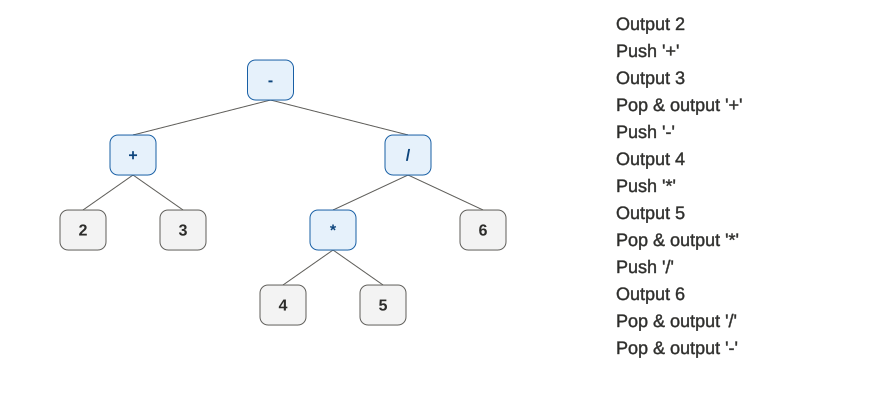

堆疊與遞迴的關係，其實非常的密切。事實上，遞迴的呼叫，甚至一般函式的層層呼叫，就是透過在系統中維護堆疊來完成，亦即一個函式在呼叫其他函式之前，會先把自己目前的一切狀態 push 進堆疊，等待被呼叫的那個函式執行完畢後，再用 pop 還原回來，繼續做剩下的部分；也就是呼叫函式相當於 push，而 return 相當於 pop。而其底層實作在不同的硬體架構上可能是不一樣的，例如 MIPS 的設計，相當於你要自己維護 top 變數；而 8051 和 x86 則有專門可用於 push 與 pop 的相關指令，但是容許使用的記憶體空間大小等方面不太一樣。
而因為堆疊跟遞迴的關係密切，所以一個需要自己維護堆疊的程式，是可以改成遞迴版，讓原本自己寫的堆疊，改成用系統來幫你維護的（但哪種版本看起來比較簡單就不一定了）；而時間複雜度的部分，只要你能確保自己維護堆疊的版本（以下簡稱「堆疊版」）跟遞迴版的操作有正確對應，則也會相同。
以括號配對為例，可以改寫為遞迴版如下：
def chk_parentheses_match(p_str, i=0, num_left_par=0): while i < len(p_str): if p_str[i] == '(': i = chk_parentheses_match(p_str, i=i+1, num_left_par=num_left_par+1) if i == -1: return -1 else: if num_left_par == 0: return -1 return i + 1 if num_left_par == 0: return 0 return -1 if __name__ == '__main__': print(chk_parentheses_match('((())(()))'))在上述範例中：
- 堆疊版的「現在要看哪個字元」，以及「現在遞迴跑了幾層（堆疊裡有多少東西）」的變數，由原本的讓它們與堆疊內容一起變化，改為在呼叫過程中傳遞。
- 回傳的資訊定義為「接下來要看哪個字元」，如果是 -1 則代表失敗，0 代表檢查結束並通過判斷。
- 承上，因為我們讓回傳值同時承載了不同種類的資訊，而代表失敗的 -1 亦會通過 while 迴圈的檢查，讓遞迴不受控制的繼續執行，因此五個 return 中的第一個，是在一旦發現失敗後就立刻終止本層呼叫，避免 -1 被誤用；而後面的四個 return，則可以跟堆疊版直接對應。
中序轉後序的演算法設計，則是為了避免系統維護堆疊的額外損耗，才從實際建出一棵樹來跑遞迴呼叫，改為自行維護堆疊。我們以沒有括號的 2 + 3 - 4 * 5 / 6 為例，將堆疊版的演算法過程與運算樹（也就是遞迴樹）上的走訪，做簡要的對比如下；其中，樹的動畫與「運算樹與前、中、後序式」篇章中，講解肉眼看著運算樹輸出後序式的方法時的那棵樹相同：

在前面的說明中，樹上的離開節點往上回傳，可以對應到堆疊版的輸出或 pop；而每個 operator 的左邊處理完畢，要往右邊走時，則對應到堆疊版的 push。
老鼠走迷宮的 DFS 演算法，當然也可以改成遞迴版：
def is_valid(maze, x, y, direction, dir_map): m = len(maze) n = len(maze[0]) xp = x + dir_map[direction][0] yp = y + dir_map[direction][1] if xp >= 0 and xp < m and yp >= 0 and yp < n and maze[xp][yp] == 0: return True return False def maze_route(maze, begin, end): dir_map = ((-1, 0), (0, 1), (1, 0), (0, -1)) curr_x, curr_y = begin if curr_x == end[0] and curr_y == end[1]: return [(curr_x, curr_y)] maze[curr_x][curr_y] = 1 for curr_dir in range(4): if is_valid(maze, curr_x, curr_y, curr_dir, dir_map): result = maze_route( maze, (curr_x + dir_map[curr_dir][0], curr_y + dir_map[curr_dir][1]), end ) if result is not None: return [begin] + result return None if __name__ == '__main__': maze = [ [0, 0, 0, 0, 0], [0, 1, 1, 0, 0], [0, 0, 0, 0, 1], [0, 0, 1, 1, 0], [0, 0, 0, 0, 0], ] print(maze_route(maze, (0, 0), (4, 4)))在上述範例中：
- 函式 is_valid 的內容，與堆疊版相同。
- 變數 curr_dir 由於只需要在自己這一層呼叫知道，所以不需要讓它變成參數在呼叫過程中傳遞。
- 回傳的資訊定義為「從這裡到終點要怎麼走」，如果是 None 則代表此路不通。